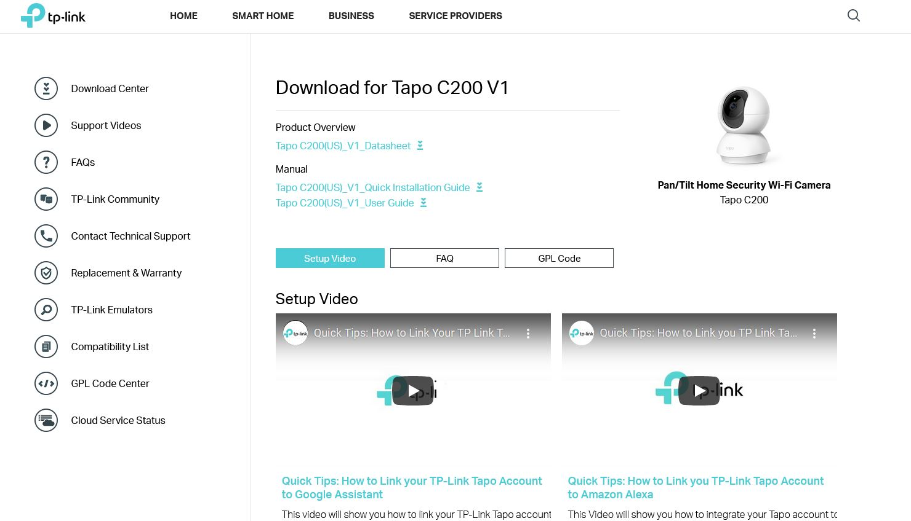
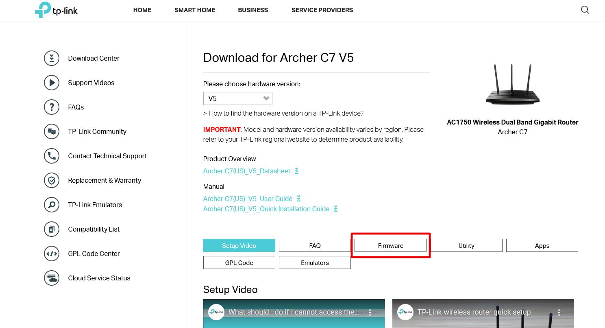
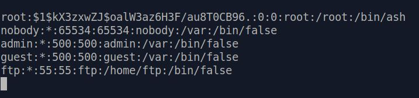

Getting The Firmware
If you have some experience in hardware pentesting, then you know you could try to look for passwords in the device's firmware.
However, as firmwares have become more and more "targeted" by pentesters and
hackers to find vulnerabilities and sensitive information, manufacturers have been starting to encrypt firmware files they release on their websites. In some cases it's even worse: firmware files may never be released publicly.
Unfortunately
in our case it's the latter. As seen in the images below, there is no tab for firmware download in the support page of the C200 camera.


{kind=link}
{kind=link}
However, there's always a workaround in such a dire situation. As pentesters, we make our own ways.
If the device we target has OTA (over-the-air) upgrade feature, we can try to capture network packets during update process
and see if we can find anything useful.
There are many ways to achieve this. As C200 is a Wi-Fi camera, we simply setup a raspberry pi as Wi-Fi router and used tcpdump
to capture packets.
Using this technique, we successfully got the download URL for the latest firmware
version! (build 200520)
Firmware Analysis
Using binwalk we can have a first glance [*]
at the firmware's structure :
DECIMAL HEXADECIMAL DESCRIPTION
--------------------------------------------------------------------------------
25088 0x6200 LZMA compressed data, properties: 0x5D, dictionary size: 8388608 bytes, uncompressed size: 111528 bytes
66560 0x10400 LZMA compressed data, properties: 0x6D, dictionary size: 8388608 bytes, uncompressed size: 4342112 bytes
1533440 0x176600 Squashfs filesystem, little endian, version 4.0, compression:xz, size: 5635718 bytes, 1041 inodes, blocksize: 262144 bytes, created: 2020-05-20 04:35:30
8062720 0x7B0700 gzip compressed data, from Unix, last modified: 2020-05-20 04:35:32
8250792 0x7DE5A8 gzip compressed data, from Unix, last modified: 2020-05-20 04:35:32
Content of decompressed file on each offset is as follows :
DECIMAL HEXADECIMAL DESCRIPTION
--------------------------------------------------------------------------------
25088 0x6200 U-boot (U-Boot 2014.01-v1.2 (May 20 2020 - 12:29:00))
66560 0x10400 Linux kernel image (Linux version 3.10.27 (root@smartlifeci1) (gcc version 4.8.5 20150209 (prerelease) (Realtek RSDK-4.8.5p1 Build 2521) ) #1 PREEMPT Wed May 20 12:35:16 CST 2020)
1533440 0x176600 Squashfs filesystem, little endian, version 4.0, compression:xz, size: 5635718 bytes, 1041 inodes, blocksize: 262144 bytes, created: 2020-05-20 04:35:30
8062720 0x7B0700 Basic files and config for C200
8250792 0x7DE5A8 False positive
With binwalk -Me we can recursively extract contents from the firmware file. The first thing we want to look for is hard-coded credentials for console login.
Sure
enough, we found the following entries in [extracted folder]/squashfs-root/etc/passwd :

In
there, $1$kX3zxwZJ$oalW3az6H3F/au8T0CB96. is the salted hash of root's password. We tried to crack it with john and hashcat but unfortunately none of them
successfully got the plaintext password.
(If by any chance you find out what the plaintext is, please do share it with us!)
{kind=link}